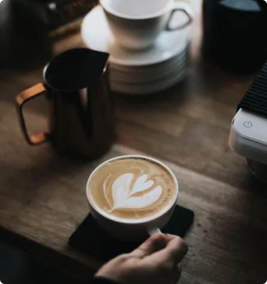

About Us
Coffeeroasters began its journey of exotic discovery in 1999, highlighting stories of coffee from around the world. We have since been dedicated to bring the perfect cup - from bean to brew - in every shipment.
Our Commitment
We’re built on a simple mission and a commitment to doing good
along the way. We want to make it easy for you to discover and
brew the world’s best coffee at home. It all starts at the source.
To locate the specific lots we want to purchase, we travel nearly
60 days a year trying to understand the challenges and
opportunities in each of these places. We collaborate with
exceptional coffee growers and empower a global community of
farmers through with well above fair-trade benchmarks. We also
offer training, support farm community initiatives, and invest in
coffee plant science. Curating only the finest blends, we roast
each lot to highlight tasting profiles distinctive to their native
growing region.
Uncompromising quality
Although we work with growers who pay close attention to all
stages of harvest and processing, we employ, on our end, a
rigorous quality control program to avoid over-roasting or baking
the coffee dry. Every bag of coffee is tagged with a roast date
and batch number. Our goal is to roast consistent, user-friendly
coffee, so that brewing is easy and enjoyable.

Our headquarters